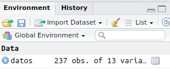
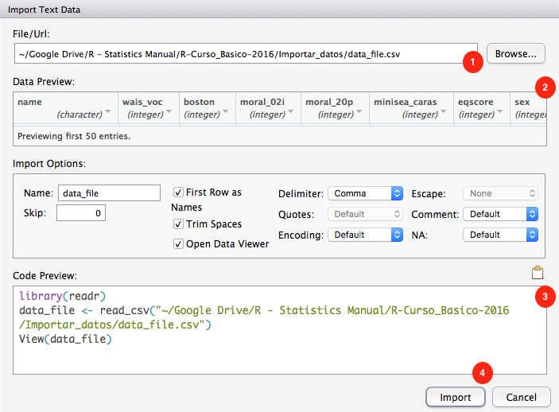

5 Basics - Data types, import and export data
5.1 Data types
5.1.1 Data Frames
Los data frames nos permiten trabajar en el familiar formato de “hoja excel”, combinando números, texto, etc. en la misma tabla.
5.1.2 Matrices
Cuando trabajamos únicamente con datos numéricos, las matrices son el método más rápido.
5.1.3 Listas
Las listas son una manera de almacenar datos muy potente pero cuya exploración puede resultar algo complicada. A continuación de puede ver una manera de visualizar interactivamente el contenido de una lista compleja.
if (!require('pacman')) install.packages('pacman'); library('pacman')
# p_load(repurrrsive)
# listviewer::jsonedit(got_chars)El paquete repurrrsive de Jenny Bryan, contiene algunas listas para usar como ejemplos. Ver su Github para más detalles, o mejor, su página web. Ésta contiene varios tutoriales muy interesantes.
5.2 Import data
5.2.1 From CSV file
Vamos a usar la siguiente base de datos.
Tras descargar el archivo de arriba, lo moveremos a nuestro directorio de trabajo ‘R workshop’. Una vez ahí, podemos usar alguna de las siguientes funciones para leer el archivo:
read_csv()- comma separated valuesread_csv2()- semicolon separated valuesread_delim( , delim = "|")- values separated by an arbitrary delimiter
# Cargamos librerias
if (!require('pacman')) install.packages('pacman'); library('pacman')
p_load(readr)
# Establecemos directorio de trabajo
# setwd("R workshop")
#Importar los datos
datos = read_csv("Data/04-Data_types_import_export/Import_CSV.csv")
#Muestra las primeras 10 observaciones
datos## # A tibble: 103 x 8
## X1 ID Genero Edad Educacion FollowUP condition PPV_DECLARED
## <dbl> <dbl> <dbl> <dbl> <dbl> <dbl> <chr> <dbl>
## 1 4 41904 1 47 8 80 PPV_Cond1 99
## 2 5 95041 2 21 6 90 PPV_Cond1 99
## 3 6 74594 2 29 6 10 PPV_Cond1 99
## 4 15 72903 2 27 7 75 PPV_Cond1 1
## 5 16 21260 1 29 5 35 PPV_Cond1 24
## 6 18 50315 2 28 6 14 PPV_Cond1 99
## 7 19 21774 2 27 4 2 PPV_Cond1 99
## 8 20 20881 2 55 6 89 PPV_Cond1 99
## 9 21 39751 2 28 6 6 PPV_Cond1 99
## 10 22 99384 1 46 5 0 PPV_Cond1 1
## # ... with 93 more rowsEn el panel ‘Environment’ veremos que aparece datos:

Haciendo click en datos abrimos una pestaña donde podemos ver el contenido de ese data frame. También podemos visualizarlo usando el codigo View(datos)
5.2.2 From XLS’ file (Excel)
Vamos a usar la siguiente base de datos.
# Cargamos librerias
if (!require('pacman')) install.packages('pacman'); library('pacman')
p_load(readxl)
# Establecemos directorio de trabajo
# setwd("R workshop")
#Importar los datos
datos = read_excel("Data/04-Data_types_import_export/Import_XLS.xls")
#Muestra las primeras 10 observaciones
datos## # A tibble: 237 x 13
## name wais_voc boston moral_02i moral_20p minisea_caras eqscore sex
## <dbl> <dbl> <dbl> <dbl> <dbl> <dbl> <dbl> <dbl>
## 1 1 34 28 1 1 29 63 0
## 2 2 13 23 NA 0 23 55 0
## 3 3 20 16 1 1 26 27 0
## 4 4 24 23 1 1 21 33 0
## 5 5 20 24 1 1 18 35 1
## 6 6 2 3 0 0 23 38 NA
## 7 7 13 15 1 NA 19 38 0
## 8 8 27 18 1 0 15 42 1
## 9 9 37 28 1 0 23 36 0
## 10 10 27 24 0 0 20 51 1
## # ... with 227 more rows, and 5 more variables: age <dbl>, wais_mp <dbl>,
## # eyes <dbl>, sass_score <dbl>, ifs_score <dbl>5.2.3 From SAV file (SPSS)
Vamos a usar la siguiente base de datos.
# Cargamos librerias
if (!require('pacman')) install.packages('pacman'); library('pacman')
p_load(haven)
# Establecemos directorio de trabajo
# setwd("R workshop")
#Importar los datos
datos = read_sav("Data/04-Data_types_import_export/Import_SAV.sav")
#Muestra las primeras 10 observaciones
datos## # A tibble: 237 x 13
## ID wais_voc boston moral_02i moral_20p minisea_caras eqscore sex
## <dbl> <dbl> <dbl> <dbl> <dbl> <dbl> <dbl> <dbl>
## 1 1 34 28 1 1 29 63 0
## 2 2 13 23 NA 0 23 55 0
## 3 3 20 16 1 1 26 27 0
## 4 4 24 23 1 1 21 33 0
## 5 5 20 24 1 1 18 35 1
## 6 6 2 3 0 0 23 38 NA
## 7 7 13 15 1 NA 19 38 0
## 8 8 27 18 1 0 15 42 1
## 9 9 37 28 1 0 23 36 0
## 10 10 27 24 0 0 20 51 1
## # ... with 227 more rows, and 5 more variables: age <dbl>, wais_mp <dbl>,
## # eyes <dbl>, sass_score <dbl>, ifs_score <dbl>5.2.4 Import all files from a folder
Vamos a usar los siguientes archivos. Tendrás que descomprimirlos en una carpeta antes de usarlos.
5.2.4.1 Using purrr
From: https://gist.github.com/ColinFay/d74d331825868b181860212cd1577b69 by @_ColinFay
if (!require('pacman')) install.packages('pacman'); library('pacman')
p_load(purrr, readr, dplyr)
files <- list.files("Data/04-Data_types_import_export/CSVs", pattern = "^0", full.names = TRUE)
full <- map_df(files, read_csv)
dplyr::glimpse(full)## Observations: 1,200
## Variables: 9
## $ Sex <chr> "male", "male", "male", "male", "male", "male", "mal...
## $ Priming <chr> "Collective", "Collective", "Collective", "Collectiv...
## $ trialN <dbl> 1, 2, 3, 4, 5, 6, 7, 8, 9, 10, 11, 12, 13, 14, 15, 1...
## $ Block <chr> "we", "we", "we", "we", "we", "we", "we", "we", "we"...
## $ Adjective <chr> "ofensivo", "resentido", "ego�sta", "indiscreto", "s...
## $ Valence <chr> "negative", "negative", "negative", "negative", "neg...
## $ Answer <chr> "yes", "no", "yes", "yes", "yes", "yes", "yes", "yes...
## $ Arrow <chr> "left", "right", "left", "left", "left", "left", "le...
## $ rT <dbl> 623, 1235, 335, 355, 618, 328, 348, 1620, 346, 778, ...# Including filenames in a column
files <- list.files("Data/04-Data_types_import_export/CSVs", pattern = "^0", full.names = TRUE) %>%
set_names(basename(.))
full2 <- map_df(files, read_csv, .id = "file")
full2## # A tibble: 1,200 x 10
## file Sex Priming trialN Block Adjective Valence Answer Arrow rT
## <chr> <chr> <chr> <dbl> <chr> <chr> <chr> <chr> <chr> <dbl>
## 1 01.csv male Collecti… 1 we ofensivo negati… yes left 623
## 2 01.csv male Collecti… 2 we resentido negati… no right 1235
## 3 01.csv male Collecti… 3 we ego�sta negati… yes left 335
## 4 01.csv male Collecti… 4 we indiscre… negati… yes left 355
## 5 01.csv male Collecti… 5 we sumiso negati… yes left 618
## 6 01.csv male Collecti… 6 we agradable positi… yes left 328
## 7 01.csv male Collecti… 7 we clasista negati… yes left 348
## 8 01.csv male Collecti… 8 we altruista positi… yes left 1620
## 9 01.csv male Collecti… 9 we ansioso negati… yes left 346
## 10 01.csv male Collecti… 10 we presumido negati… yes left 778
## # ... with 1,190 more rows5.2.4.2 Traditional way
if (!require('pacman')) install.packages('pacman'); library('pacman')
p_load(purrr, readr, dplyr)
# We list all files in the desired folder
Path_Folder = "Data/04-Data_types_import_export/CSVs/"
file.list <- paste0(Path_Folder, list.files(Path_Folder)); file.list## [1] "Data/04-Data_types_import_export/CSVs/01.csv"
## [2] "Data/04-Data_types_import_export/CSVs/02.csv"
## [3] "Data/04-Data_types_import_export/CSVs/03.csv"
## [4] "Data/04-Data_types_import_export/CSVs/CSVs.zip"# Method 1
# Read and bind all of them
# We can use the function read_csv or any other
df = lapply(file.list, read_csv) %>%
bind_rows(.id = "ID")
df## # A tibble: 1,600 x 10
## ID Sex Priming trialN Block Adjective Valence Answer Arrow rT
## <chr> <chr> <chr> <dbl> <chr> <chr> <chr> <chr> <chr> <dbl>
## 1 1 male Collecti… 1 we ofensivo negati… yes left 623
## 2 1 male Collecti… 2 we resentido negati… no right 1235
## 3 1 male Collecti… 3 we ego�sta negati… yes left 335
## 4 1 male Collecti… 4 we indiscreto negati… yes left 355
## 5 1 male Collecti… 5 we sumiso negati… yes left 618
## 6 1 male Collecti… 6 we agradable positi… yes left 328
## 7 1 male Collecti… 7 we clasista negati… yes left 348
## 8 1 male Collecti… 8 we altruista positi… yes left 1620
## 9 1 male Collecti… 9 we ansioso negati… yes left 346
## 10 1 male Collecti… 10 we presumido negati… yes left 778
## # ... with 1,590 more rows# Method 2
df = do.call(rbind, lapply(file.list, function(x) read_csv(x)))
#%>% select(Rut, Nota, Prueba))) # We can add this if we have a set of common columns
df## # A tibble: 1,600 x 9
## Sex Priming trialN Block Adjective Valence Answer Arrow rT
## <chr> <chr> <dbl> <chr> <chr> <chr> <chr> <chr> <dbl>
## 1 male Collective 1 we ofensivo negative yes left 623
## 2 male Collective 2 we resentido negative no right 1235
## 3 male Collective 3 we ego�sta negative yes left 335
## 4 male Collective 4 we indiscreto negative yes left 355
## 5 male Collective 5 we sumiso negative yes left 618
## 6 male Collective 6 we agradable positive yes left 328
## 7 male Collective 7 we clasista negative yes left 348
## 8 male Collective 8 we altruista positive yes left 1620
## 9 male Collective 9 we ansioso negative yes left 346
## 10 male Collective 10 we presumido negative yes left 778
## # ... with 1,590 more rows5.2.5 Import files using RStudio
Vamos a usar la siguiente base de datos.
A partir de la version 1.0 de RStudio podemos importar archivos de datos usando la interfaz gráfica - Panel Environment > Import Dataset, arriba a la derecha. En cualquier caso, para que lo que hacemos sea reproducible, es recomendable trabajar con código.


5.3 Export data
5.3.1 Export data to CSV file
# Carga libreria
if (!require('pacman')) install.packages('pacman'); library('pacman')
p_load(readr)
# Volcamos datos a archivo
write_csv(datos, "Data/04-Data_types_import_export/Export_saved_file.csv")